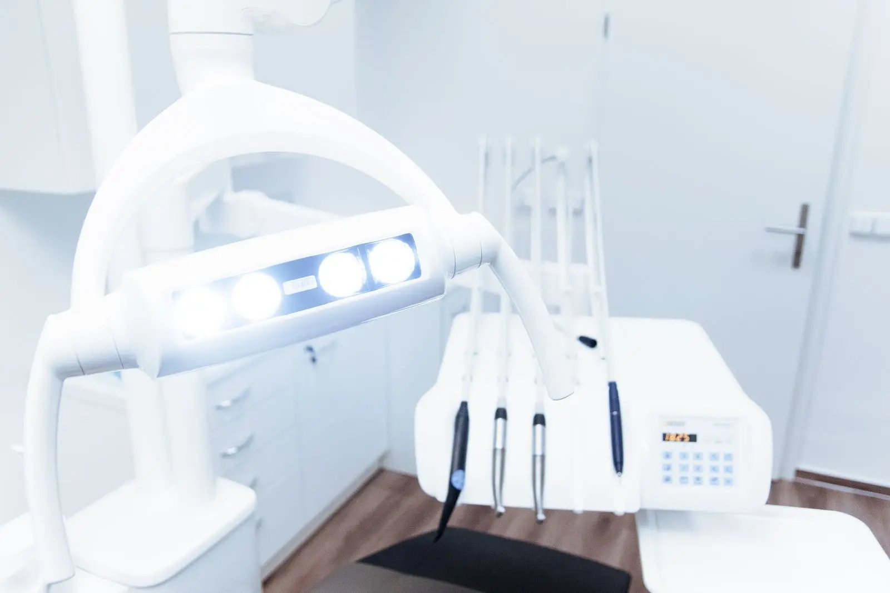
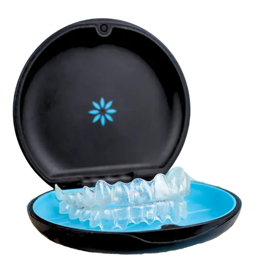
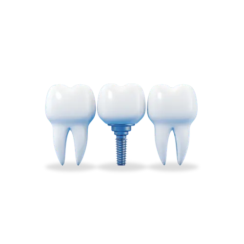
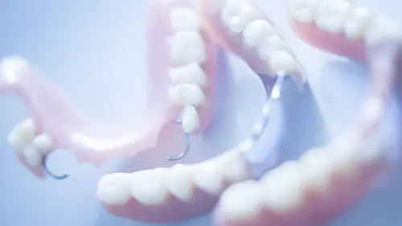
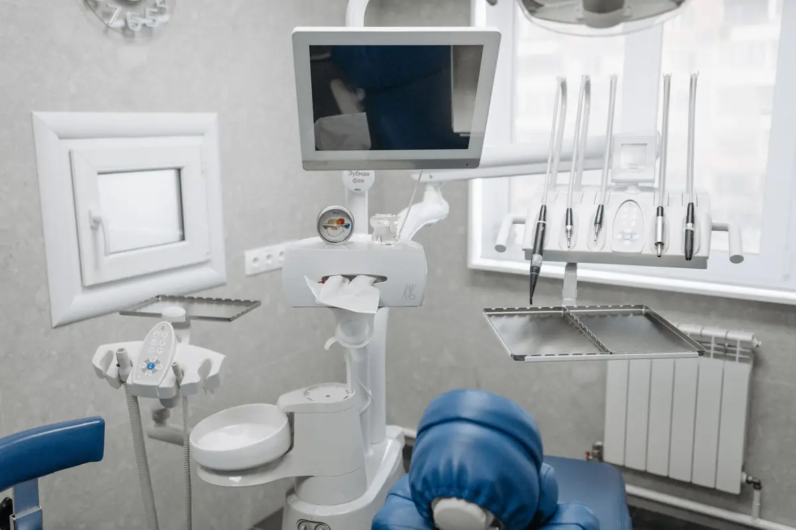

Dr. Minesh Y. Patel
D.D.S., owner of the practice since 2011
Graduated from the University of Tennessee College of Dentistry in Memphis in 1992 and served in the United States Public Health Service as a staff dentist.
Read Dr. Patel’s storyJackson, Tennessee
From your child’s first check-up through adulthood: dental cleanings, cosmetic dentistry, Invisalign®, dental implants and dentures at 1523 S. Highland Avenue.

Illustration photo (Pexels), not from the practice
Services
Family & Cosmetic Dentistry of Jackson has provided personalized dental care to thousands of families. Our patients come from near and far to experience the warm, individualized care we provide.

Cosmetic dentistryYour beautiful smile begins with us. Schedule a consultation for any of our cosmetic services.
Dental implantsTooth loss happens. At FCD you have a secure solution for replacing your missing teeth with dental implants.
Dentures and partialsTreatment for the loss of more than one tooth.Invisalign®
The Invisalign treatment consists of a series of clear, snap-on, custom fit, removable mouth trays that apply a controlled amount of force to your teeth. The system provides the same beautiful results as traditional braces, but since the trays are made of clear plastic, they are virtually invisible.
Our doctors
D.D.S., owner of the practice since 2011
Graduated from the University of Tennessee College of Dentistry in Memphis in 1992 and served in the United States Public Health Service as a staff dentist.
Read Dr. Patel’s storyD.D.S.
Originally from Alexandria, Egypt, he chose to call Jackson home. He strives to provide personalized attention, comfortable and painless experience for each patient.
Read Dr. Andrew’s storyNew patients
For your convenience, you can download new patient forms from our website. Simply print and fill out these forms and bring them along to your first appointment.
Yes. We accept walk-ins during normal business hours.
We treat all ages, as we provide a patient centered dentistry in a relaxed environment for the whole family.
Yes we accept both. Please bring your insurance card and be early to your appointment to complete paperwork or save time by downloading patient documents from our website to complete and bring with you.

Illustration photo (Pexels), not from the practice
1523 S. Highland Avenue
Jackson, TN 38301
Patient reviews
“Both of my daughters were referred here after outgrowing our pediatric dentistry. The ladies up front are kind and friendly and get you checked in quickly. The wait times are short. The nurses are great! Super kind and extremely pleasant. The dentist is AMAZING! He is kind, answers all questions and concerns, and even talked and joked with my daughter who has pretty severe anxiety to help her relax and be more comfortable! We are very pleased with our new dentistry home and would recommend to everyone!”
“Best dentist ever both of them they are so nice I have high anxiety they sure do it fast when I move out of state I’m gonna really miss this dentist”
“Absolutely amazing dentistry! The front staff are friendly and gets you checked in quickly. The nurses are kind and friendly. Very short wait times. The dentist is nothing short of wonderful! He explained everything, answered all questions, and was so kind to my daughter with anxiety to make her feel comfortable. We are extremely pleased with FCD being our new dentistry home! I highly recommend them for your entire family!”
Call us or send a request. We accept walk-ins during normal business hours.